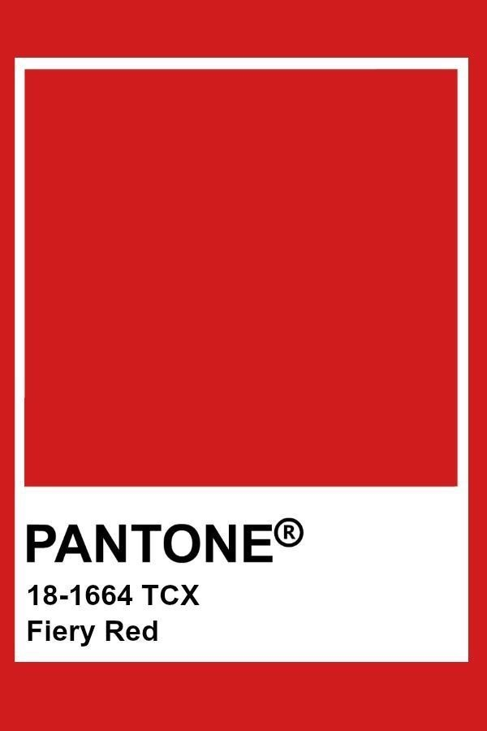
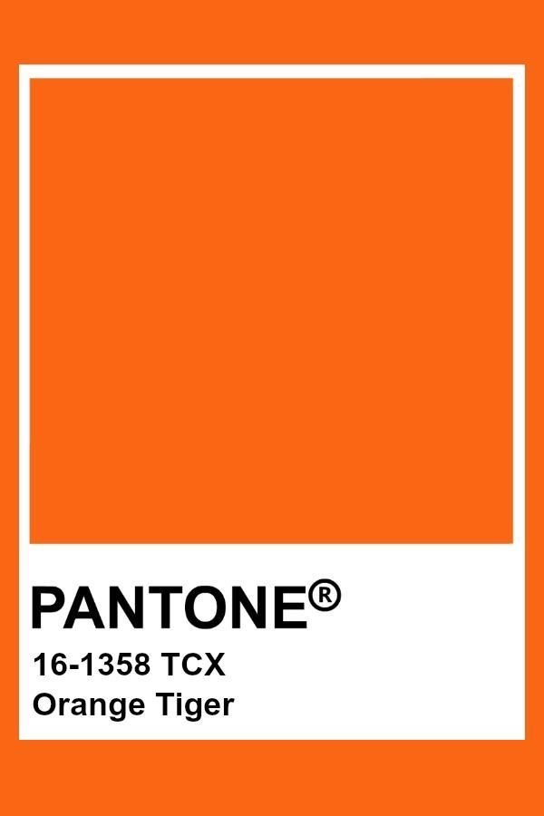
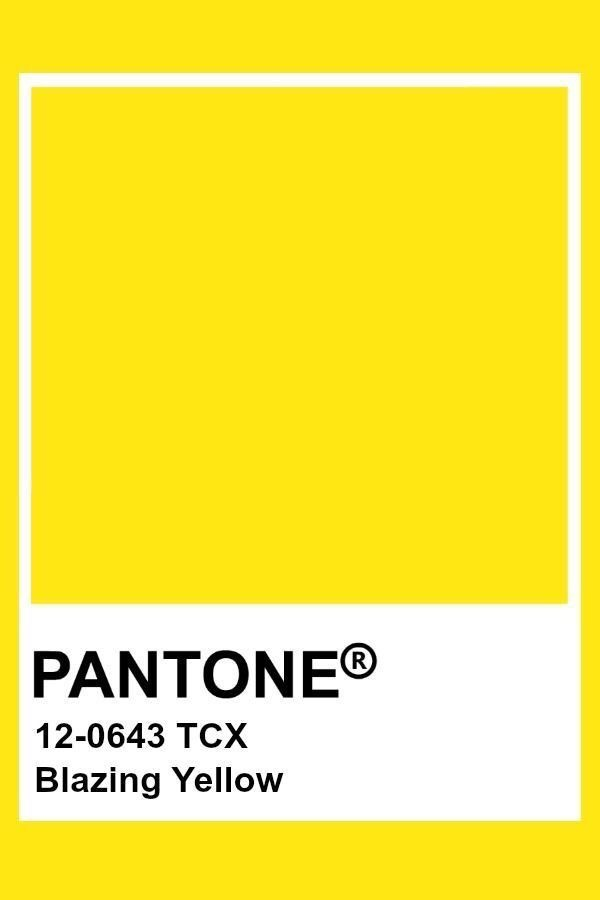
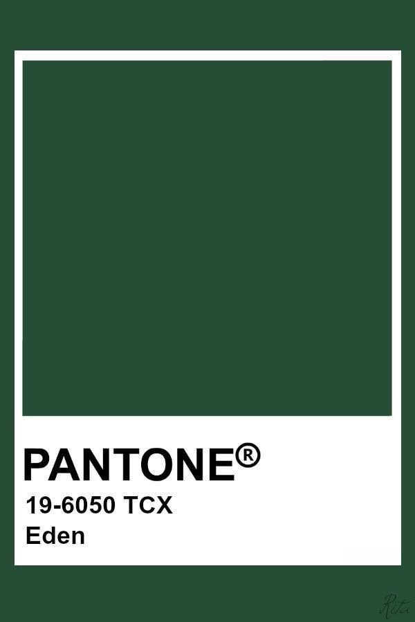
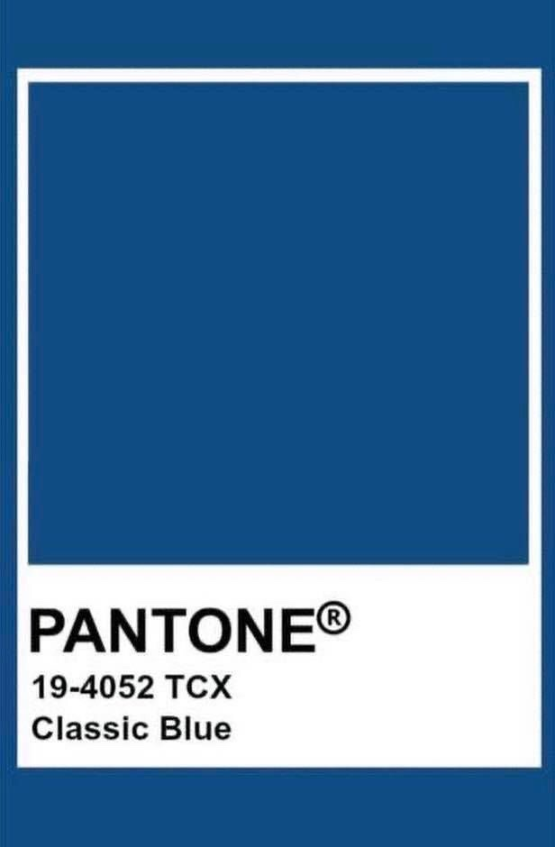
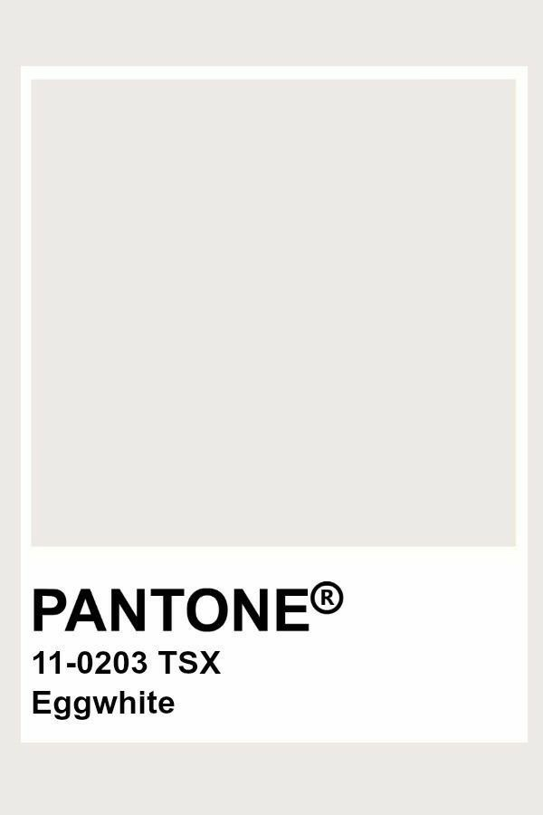
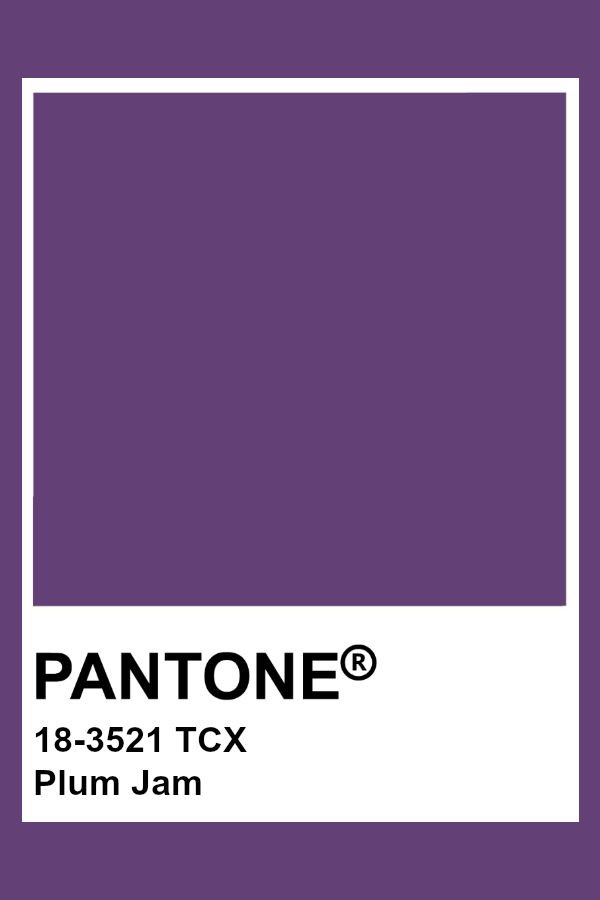
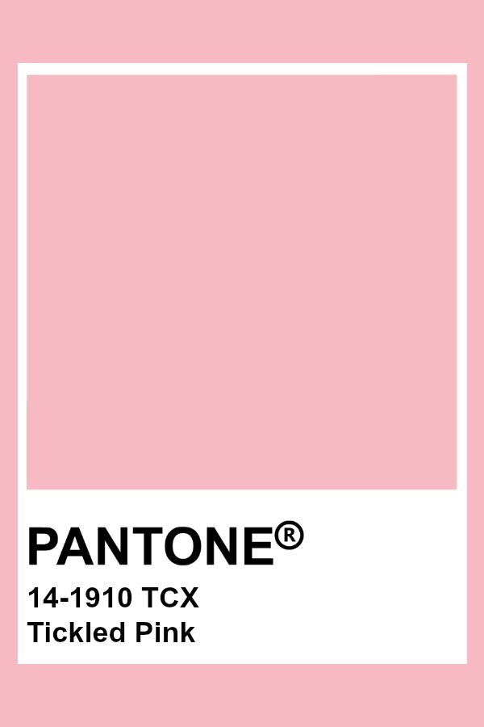

색은 인체에 파도처럼 신호를 보내고 있으며 그 진동이 사람으로 하여금 편안함과 흥분, 따뜻함과 차가움 등의 변화를 느끼도록 만듭니다.
빨간색
심리적으로 부정적인 생각을 극복할 수 있도록 하며 활기, 야망을 갖게 합니다. 또한 빨강은 감각신경을 자극해 후각, 시각, 청각, 촉각에도 도움이 됩니다. 이를 통해 아드레날린 분비를 통해 혈액 순환을 원활하게 하고 헤모글로빈 생성을 도움을 주어 신격 조직을 자극하여 무감각, 마비가 수반되는 질병을 치유하는데 효과적입니다. 또한 공간적 효과로 보면 공간의 에너지를 불어 넣으며 다른 색상과는 달리 아드레날린을 불러일으켜 열정적이고 생기 가득한 공간으로 만들기에 효과적입니다.
추천공간: 거실, 침실

주황색
주황색은 긍정적인 감정, 향기의 감각을 연상시켜 사람을 열정적으로 행하는데 도움이 됩니다.
추천공간: 거실

노란색
노란색은 심리적으로 자신감, 낙천적인 태도를 갖게 하고 새로운 아이디어를 얻도록 하는 색입니다. 또한 지정능력을 나타내 운동신경을 활성화 시키며 근육에 사용되는 에너지를 생성하는 색입니다. 그리기에 인테리어에 적용될 경우 활기차고 즐거운 분위기가 연출될 수 있고 당뇨병환자들의 경우 노란색은 췌장 인슐린 분비를 자극해 처방받는 인슐린의 양을 줄이는데 도움을 줍니다. 또한 식욕을 불러일으키는 색으로 식사공간에 사용하기에 좋습니다.
추천공간: 부엌, 식사공간

초록색
초록색은 우리 눈을 가장 편하게 해주는 색깔로, 심리적으로 스트레스, 격한 감정을 차분하게 가라앉혀 균형을 잡아주는 역할을 합니다. 그러기에 우울증과 같은 심리 상태와 관련된 질환의 치료 약물로도 사용되며 나이를 먹을수록 집에 있는 시간이 길어지는 노인들에게 오는 우울증을 예방하는데 도움이 됩니다
또한 초록색은 진정시키는 효과가 있어 스트레스를 풀어주며, 사람을 편안하게 만듭니다. 또한 공간을 풍성하게 만들어 침실에 많이 사용됩니다.
추천공간: 침실, 거실

파란색
파란색은 침정효과가 있고 심신의 회복력, 신경계통의 색으로 사용되며 불면증완화에도 도움을 줍니다. 또한 신진대사를 증대시키며, 활력을 상승, 성장 촉진 그
리고 혈압, 호흡, 심장 박동 수를 낮추는 효과가 있습니다. 그러기에 인테리어로 파랑은 실내 편안한 분위기를 조성하여 스트레스를 줄여 주는데 사용하기에 침실, 욕실 등에 잘 어울리는 색입니다.
추천공간: 침실, 욕실, 개인 공간

흰색
흰색은 색 중에서 가장 밝은 색으로 심리적으로 동요된 기분을 억제하며 집중력을 높이는 효과를 주며 육체적으로는 장시간 동안 보면 정서적으로 메마르고 눈에 피로가 옵니다.
추천공간: 거실

보라색
분발, 독소, 약화, 희석의 단어와 연결되는 보라색은 면역활동과 림프 계통의 활동을 증진시켜 주는 역할을 하며 마음을 맑게 하고 평화를 가져다 주는 효과가 있어 불면증에 시달릴 때 침구세트를 보라색으로 갖추면 잠을 푹 잘 수 있게 됩니다. 일반적으로 침구에 사용되는 컬러인 분홍색이나 하얀색은 수면에 도움이 되지는 못합니다. 그러므로 근심을 덜고 싶거나 편하게 휴식을 취하고 싶을 때 보라색을 이용하면 좋습니다. 단 보라색은 감수성을 예민하게 만들므로 우울한 상태에서는 가까이하지 않도록 합니다. 보라색 자체는 식욕 조절 작용이 있어 비만증 치료에 도움이 되고 심장 활동도 편안하게 해주는 기능도 있습니다.
추천공간: 개인 공간, 거실, 복도 공간

분홍색
분홍색의 경우에는 자궁 내부 색상과 같아 편안함과 안정감을 주며, 공간적으로 따뜻함과 화사함을 주어 가족실 또는 아이 방에 활용하기에 좋습니다.
추천공간:아이 방, 개인 공간
